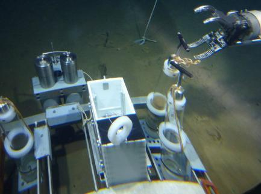

Related pictures
-


- 
Since the implementation of the major project of deep-sea submersible technology and equipment in 2011, "Jiaolong" manned deep-sea submersible has successfully completed a 5000-7000-meter sea trial and put it into experimental application, successfully developed a 4500-meter deep-sea operation system and broke through a series of important research results such as 4500-meter manned spherical shell key technologies.
during 2014-2015, the first leg of the pilot application voyage of "jiaolong" carried out 10 dives in the caiweihai mountain area and the Malcus-wacker sea mountain area in the northwest Pacific ocean, taking accurate positioning samples and obtaining 116 biological samples, 21 cobalt-rich crust samples, 99.2kg, 24.32kg polymetallic nodule samples, 22 rock samples, 107.7kg, 26 sediment samples and 1232l seawater samples ...
"jiaolong" experimental application research team has completed the scheduled tasks in an all-round and over-quota way in this flight segment. Through the investigation and study of the first leg of the voyage, the scene of the voyage achieved four results and understandings:
first, the resources and biological conditions of caiwei seamount mining area have been basically found out, and the survey results are outstanding. Jiaolong has completed 8 dives on Caiwei Seamount. Combined with the 5 dives on the 31st voyage of China Ocean, through the anatomical investigation of points, lines and surfaces, it has basically found out the distribution of resources in cobalt-rich crust mining areas, and has basically mastered the distribution law of biodiversity and environmental conditions in mining areas.
second, jiaolong has stable performance and obvious advantages. Jiaolong has completed a total of 10 trouble-free dives, with an average time of 9 hours and 53 minutes in each dive. The system is stable and has obtained a large number of high-quality videos and photos. It has also carried out supporting equipment tests, including micro remotely operated vehicle tests, submarine geomechanical tests, ultra-short baseline tests, etc. This has further brought into play Jiaolong's unique technical advantages in conducting fixed-point operations and fine investigations in complex terrain.
three is the rapid growth of the operation and maintenance team with the personnel of the national deep sea base management center as the main force. The submersible maintenance team, deployment and recovery operation team, and submarine crew trainees were trained, and a group of new personnel grew up rapidly, laying the foundation for the operational operation of Jiaolong.
four is to realize the comprehensive benefits of multi-task and multi-goal. We have carried out air probe observation, real-time physiological and psychological monitoring of diving personnel, and filming of the documentary "Deep Submergence". Various media and writers' associations have carried out the popularization and publicity of marine knowledge and awareness.
in addition, jiaolong has also carried out diving operations in adjacent sea areas, providing first-hand data for comparative study of resources and environmental conditions in different sea areas.
on April 30, 2016, the jiaolong manned submersible successfully completed its scientific application diving on the northwest side of the Vega seamount in the northwest Pacific ocean. this is also the first time jiaolong has carried scientists to dive in this sea area.
According to the on-site command, Tang Jialing, a submarine pilot from the National Deep Sea Base Management Center, took the lead in the dive, carrying Yao Huiqiang, a senior engineer of the Guangzhou Marine Geological Survey, and Yang Yifan, a submarine pilot student. "Jiaolong" was put into water at 8: 03 local time on April 30 and recovered to the deck at 16: 05. The underwater time is 8 hours and 2 minutes, the submarine operation time is 5 hours and 24 minutes, and the maximum diving depth is 2258 meters.
this dive started a 4-kilometer near-bottom voyage observation, took a large number of submarine video photos, collected 57 kg of gravel crusts and 9 samples of macrobenthos, including 4 sponges, 2 corals and shrimps, 1 starfish and 8 liters of near-bottom water samples, and also conducted a real-world submarine dive training for submarine pilots.
The State Oceanic Administration's Xiang Yanghong 09 carrying Jiaolong manned submersible and its scientific team arrived at the dock of the National Deep Sea Base. So far, the pilot application voyage of the Jiaolong in 2016 (the 37th voyage of the Great Ocean of China) lasted 94 days, sailed 11,837 nautical miles, and made a total of 22 dives, completing the planned scientific investigation mission safely and successfully. Xiaotong Peng, chief scientist of the second stage of this voyage, said that this was the first time Jiaolong had returned to the trench area to intensively carry out diving operations at a depth of more than 6,000 meters since its successful 7000-meter sea trial in 2012, and had achieved fruitful results in scientific research.
active mud volcanoes were discovered in the southern slope of the mariana trench for the first time during the expedition, and a large number of high-definition videos were taken. It is confirmed that seamounts in the northern slope of the Mariana Trench are mud volcanoes, and a large number of geological samples of mud volcanoes have been obtained. These samples and video data provide an important basis for studying the geological activities of mud volcanoes and the geological processes of subduction plates.
in addition, it is preliminarily proved that the distribution of macrobenthos on the vicar seamount and caiwei seamount has good connectivity. Through the comparative analysis with the Vicia seamount, the scientific researchers showed that the species composition and diversity of macrobenthos on the Vicia seamount are very similar to those on the Vicia seamount. Except a few sponges and their symbiotic shrimp may be new species, the remaining species are basically the same as those on the Vicia seamount, which changes the traditional understanding of poor connectivity of biological communities among seamounts and provides first-hand data for scientific evaluation of seabed environment and rational design of deep-sea mining system.
China ocean voyage 37commander in chief Wu changbin said that there were many dives in this voyage, including 5 dives of 6500 meters, 9 dives of more than 6000 meters, with a maximum depth of 6796 meters. In large depth dives, Jiaolong has stable overall technical status and reliable performance of all systems and equipment.
Wu changbin said that during the diving operation in the cobalt-rich crust sea mountain area of this voyage, jiaolong has made many long-distance and high-fall voyages, with the underwater sailing distance up to 5,000 meters, the climbing height difference of underwater operation up to 1,100 meters, and the sampling weight of geological samples per dive up to 124 kilograms. It has set the record of single voyage distance, height difference of operation and sampling weight of geological samples since Jiaolong's diving.
China ocean voyage 38jiaolong "completed the first dive in the third leg of voyage 38 of China ocean, with Harbin engineering university alumnus Tang jialing as the lead driver. In the next 20 days, Jiaolong is expected to make 10 deep dives in the deep areas of Mariana Trench and Yapu Trench. Prior to this, the first two legs of China Ocean 38 expedition have been completed in the northwest Indian Ocean and the South China Sea respectively.
jiaolong manned submersible is China's first self-designed and self-integrated operational deep-sea manned submersible, with a maximum depth of 7,000 meters. it is currently the deepest operational deep-sea manned submersible in the world.
Tang Jialing, who graduated from Harbin engineering electronics and information major in 2007, as China's first submarine crew, created the world's largest diving depth of 7062 meters for operational submersibles and discovered and obtained two new species of deep seabed. he was awarded the title of "deep diving hero" by the central military Commission of the state Council and was also the winner of the 17th China youth may 4th medal.